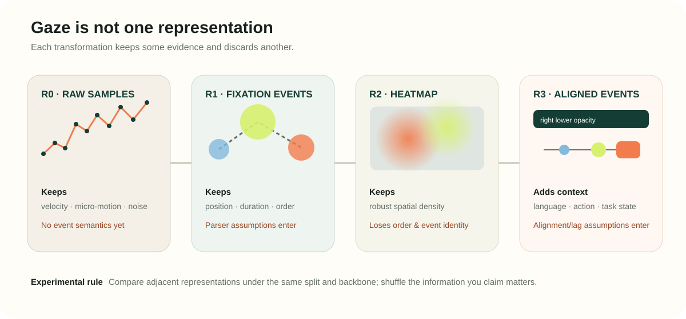
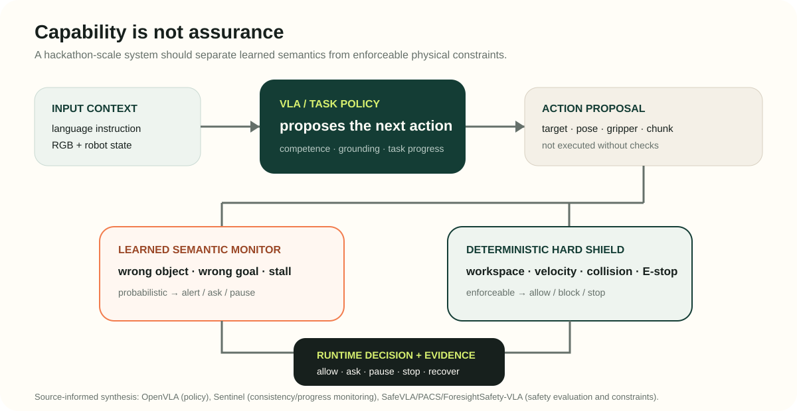

좌표계
screen, viewport, image, anatomy/object 좌표를 구분합니다. zoom·pan·letterbox를 무시하면 정교한 모델도 잘못된 supervision을 학습합니다.
Knowledge · Conceptual foundations
먼저 Core Research가 다루는 시선·영상·언어의 공통 개념을 설명하고, 마지막 절은 별도 Opportunity Lab에만 적용되는 VLA·robot safety 부록으로 명확히 구분합니다.
Inference chain
모델 성능은 마지막에서 두 번째 층일 뿐입니다. 무엇을 측정했는지와 어떤 결정을 허용하는지가 먼저 정의돼야 합니다.
불만족, 이해, 검증, 위험처럼 직접 측정할 수 없는 대상.
수정 선택, 정답 응답, 오류 발견, 안전 위반처럼 관찰 가능한 기준.
gaze sample, image frame, language command, robot state/action.
heatmap, fixation token, object state, action chunk, aligned event.
region score, label probability, anomaly score, task progress.
표시, 질문, 일시정지, hard stop. 오류 비용에 맞춰 권한을 제한.
“오래 봤다 → 고치고 싶다”, “VLA가 성공 확률이 높다 → 안전하다”처럼 중간 층을 건너뛰는 문장은 연구 가설이 아니라 검증해야 할 추론입니다.
Gaze vocabulary
표현을 바꾸면 보존되는 정보와 가정도 바뀝니다. BEAVER의 ablation ladder는 이 차이를 실험 변수로 취급합니다.
| 개념 | 무엇인가 | 보존하는 정보 | 주의할 해석 |
|---|---|---|---|
| Raw sample | tracker가 주파수별로 기록한 좌표·동공·validity | 미세 이동, 속도, parser 이전 신호 | 노이즈와 정보가 분리되지 않음 |
| Fixation | 일정 시간·범위 안에 머문 sample 묶음 | 위치, 시작/종료, 지속시간 | parser threshold에 따라 결과가 달라짐 |
| Saccade | fixation 사이의 빠른 안구 이동 | 전이 방향·진폭·속도 | 의식적 선택으로 단정할 수 없음 |
| Dwell / AOI | 객체·영역 안의 누적 주시 | 영역 수준 attention allocation | 크기·saliency·center bias의 영향 |
| Scanpath | fixation과 saccade의 시간적 순서 | 탐색, 재방문, 회귀 패턴 | 순서가 task state를 직접 뜻하지 않음 |
| Heatmap | 위치·지속시간을 공간 밀도로 집계 | 강건한 공간 prior | 순서와 개별 event를 잃음 |

screen, viewport, image, anatomy/object 좌표를 구분합니다. zoom·pan·letterbox를 무시하면 정교한 모델도 잘못된 supervision을 학습합니다.
gaze, dictation, click, edit, robot action은 서로 다른 clock과 지연을 가집니다. timestamp 정규화와 lag sensitivity가 필요합니다.
tracking ratio, calibration drift, blink, off-screen sample을 보고합니다. 결측을 좌표 clipping으로 숨기지 않습니다.
Construct validity
눈은 정보를 얻기 위해 움직입니다. 따라서 어떤 영역을 봤다는 사실은 그 영역을 좋아함·싫어함·선택함·신뢰함 중 어느 것도 자동으로 의미하지 않습니다.
대상을 보기만 해도 시스템이 실행되면 탐색과 명령이 충돌합니다. GazeImageRefine에서는 gaze를 후보 생성에만 쓰고, 수정은 명시적 확인과 undo 뒤에 실행합니다.
Multimodal alignment
멀티모달 결합은 feature를 concatenate하는 일이 아닙니다. 어떤 사건을 공유하고 시간·공간·의미가 어떻게 대응하는지 정의하는 일입니다.
Spatial
gaze↔CXR lesion, gaze↔object mask, camera pixel↔robot workspace.
Temporal
fixation↔dictation mention, observation↔action chunk, anomaly↔intervention.
Semantic
pathology label, edit reason, instruction predicate, expected task state.
Causal
modality shuffle·mask·lag sweep으로 단순 상관과 누출을 배제합니다.
Evidence discipline
중첩된 사람·이미지·로봇 episode를 개별 frame처럼 무작위 분할하면 모델이 대상을 기억하고도 일반화한 것처럼 보일 수 있습니다.
image/saliency/rule-only baseline을 먼저 세우고 gaze나 VLM이 더하는 값을 paired comparison으로 측정합니다.
환자·이미지·participant·task setup·episode가 train/test를 넘지 않도록 목적에 맞는 group split을 둡니다.
확률이 실제 오류율과 맞는지 ECE·Brier로 보고, 선택적 예측은 risk–coverage curve로 평가합니다.
AUROC만이 아니라 false alarm, 탐지 지연, 작업 성공, 회복 시간, 안전 위반을 함께 봅니다.
시간을 주장하면 order shuffle, 위치를 주장하면 spatial permutation, 의미 정렬을 주장하면 label·lag shuffle, 런타임 모니터를 주장하면 rule-only와 no-monitor를 비교합니다.
Opportunity Lab appendix · not Core Research
이 절은 해커톤 후보를 이해하기 위한 부록입니다. GazeMed·GazeImageRefine·leXic의 공통 이론이나 현재 core roadmap에 VLA를 추가하는 것이 아닙니다.
VLA는 자연어 지시 ℓ과 현재·과거 관측 o≤t에서 로봇 행동 at를 예측하는 정책 π(at | o≤t, ℓ)입니다. 관측은 카메라 영상과 robot state를, 행동은 end-effector pose·joint command·gripper state 또는 action chunk를 포함할 수 있습니다.
learned monitor는 잘못된 객체 선택이나 진행 정체 같은 의미적 이상을 탐지할 수 있지만, 물리적 안전 보증을 대신하지 않습니다. joint/velocity/workspace limit, collision check, emergency stop은 SDK·controller·검증 가능한 규칙 계층에 남겨야 합니다.
